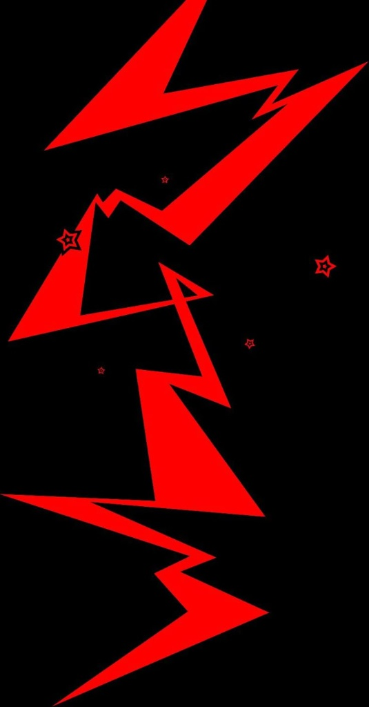

How should users access the route before climbing?
The app needed to turn visual route information into a clear preview before the climber starts moving.
How the concept moved from broad sketches to a focused mobile-first route preview and audio guidance workflow.
Based on our research and user requirements, the key design challenge was to make indoor climbing route guidance accessible without increasing cognitive load or reducing safety.
The app needed to turn visual route information into a clear preview before the climber starts moving.
The design had to avoid constant narration and preserve the user's rhythm and attention.
The app needed to be transparent when recognition was unclear and support human fallback.
The entry point should make route access immediately visible.
A simplified pre-climb map helps users form a mental model.
Audio is useful, but it needs visual confirmation and fallback controls.
Human confirmation remains important for setup and safety.
A dashboard can help, but scan must stay the primary action.
Starting with a tutorial delayed the user's route task too much.
Recovery controls are central to trust and safety.
Useful after climbing, but secondary to route access and guidance.
Accessible to screen readers, but too abstract for spatial route planning.
Useful for sighted users, but not sufficient for blind and low-vision climbers.
Combines route capture, confirmation, and a simplified overview that can be read visually or through audio.
Too much information during physical movement.
Hard to use while climbing and not reliable for low-vision users.
Keeps guidance low-overload, repeatable, and action-focused.
Would make the system feel falsely confident in a safety-critical context.
Technically precise, but hard to interpret while climbing.
Tells the user what to do next: repeat, pause, simplify, or request help.
Built for phones in the climbing gym, with accessible controls and speech support.
Route capture begins from a clear scan action and supports assistant confirmation.
The main support happens before climbing, when cognitive load is lower.
During climbing, cues are concise, repeatable, and direction-first.
Text size, contrast, audio, and guidance preferences are easy to reach.
Uncertainty is made explicit through repeat, pause, simplify, and request-help actions.
The project moved from broad assistive ideas toward a focused route-preview-first interaction model.

Defined route understanding and cognitive load as the core challenges.
Generated route access, guidance, settings, and fallback concepts.
Compared text, visual, camera, audio, and fallback models.
Mapped Home to Scan to Preview to Guidance to Fallback.
Shifted more support before climbing and shortened live cues.
Committed to mobile route preview, short audio, settings, and fallback.